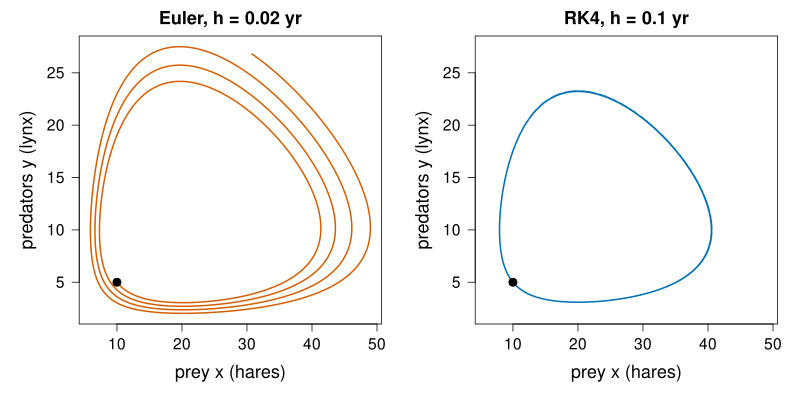
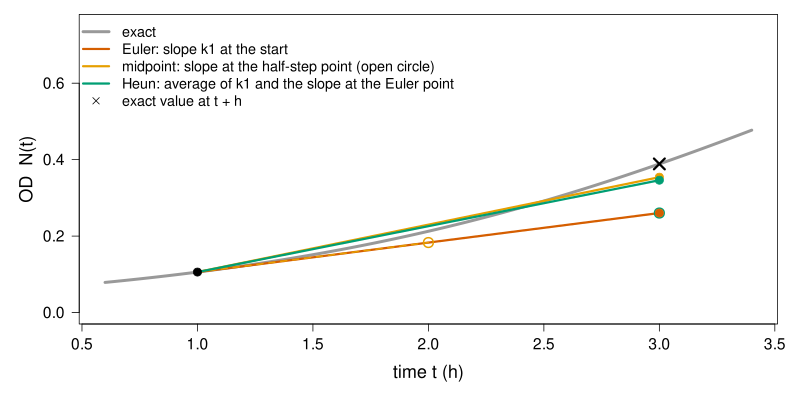
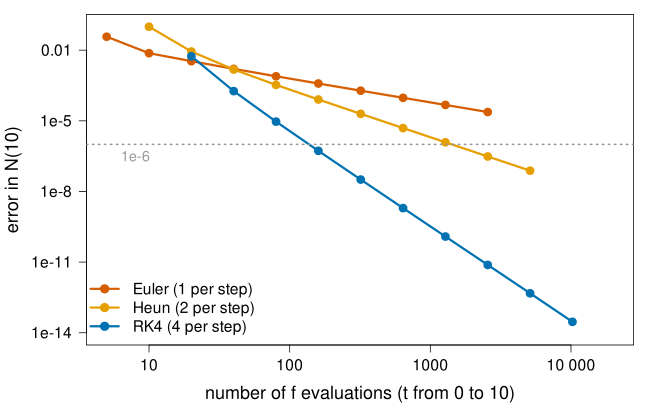
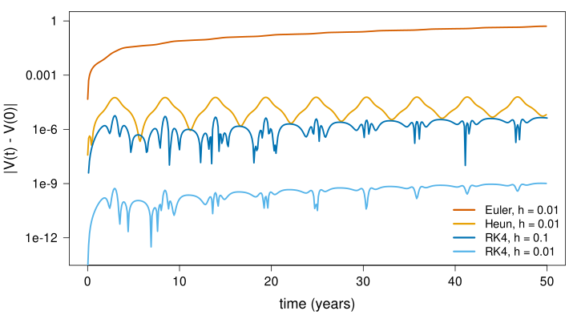
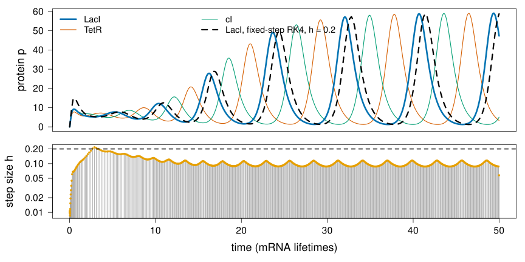
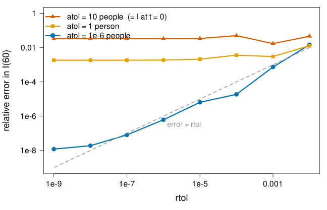
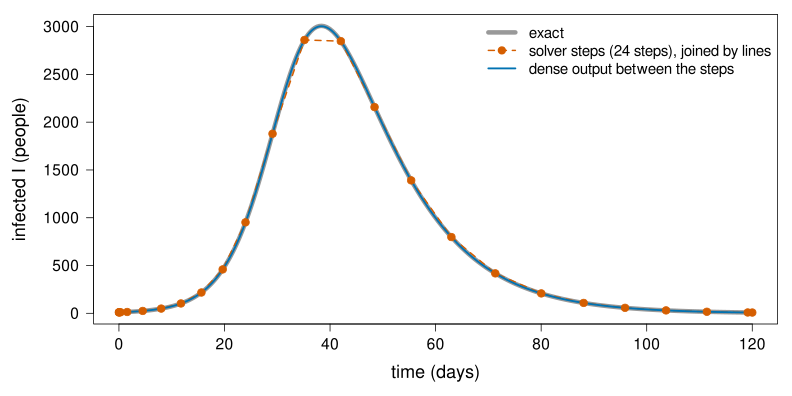
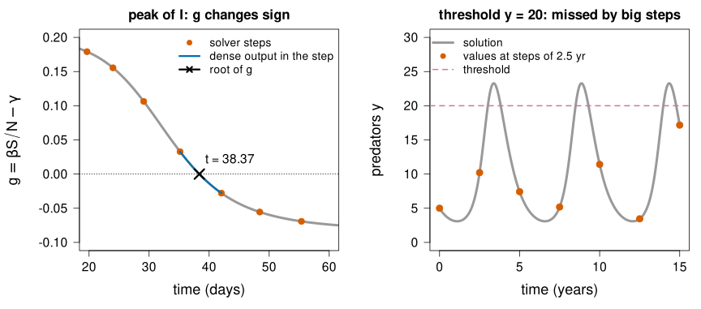

Euler’s method is order 1: ten times more accuracy costs ten times more steps. This lecture is about the methods that the ODE solvers you call actually use.
Runge–Kutta methods take several slope evaluations per step and combine them: midpoint and Heun (order 2), the classical RK4 (order 4).
The order is read off a log–log plot; the price is the number of function evaluations.
Adaptive step size: two estimates of different order in one step give an error estimate for free; the step is accepted or rejected and the next step size chosen from it (Dormand–Prince, behind ode45, RK45, Dopri5).
What rtol and atol mean, dense output, and events (stop when the epidemic peaks).
Biology: predator–prey cycles (a conserved quantity shows the error) and the repressilator, a synthetic genetic oscillator.
Recap: Euler’s method
From Initial value problems and Euler’s method: to solve y' = f(t, y), y(t_0) = y_0, step along the slope at the start of each step,
y_{n+1} = y_n + h\, f(t_n, y_n).
Logistic growth of an OD culture, N' = rN(1 - N/K) with r = 0.8 per hour, K = 1.2, N_0 = 0.05:
h (hours)
1
0.5
0.25
0.125
Euler: error in N(10)
7.5\times10^{-3}
3.4\times10^{-3}
1.6\times10^{-3}
7.8\times10^{-4}
Halve h, halve the error: the global error is \propto h, order 1.
An error of 10^{-6} needs about 60\,000 steps. Accuracy is expensive.
The slope at the start of the step is used for the whole step, but the slope changes during the step.
A biology problem first: predators and prey
Hares x and lynx y (Lotka–Volterra): \quad x' = a x - b x y, \qquad y' = c x y - d y, with a = 1, b = 0.1, c = 0.075, d = 1.5 per year, x_0 = 10, y_0 = 5.

The true solution is a closed orbit: the populations cycle for ever. Euler (h = 0.02, 1000 steps over 20 years) spirals outwards, predicting ever larger booms and busts.
RK4 with 5 times larger steps closes the orbit to plotting accuracy.
Better slopes: midpoint and Heun

Midpoint: take a half Euler step, evaluate the slope there, use that slope for the whole step: k_1 = f(t_n, y_n), k_2 = f(t_n + \tfrac h2, y_n + \tfrac h2 k_1), y_{n+1} = y_n + h k_2.
Heun: take a full Euler step, evaluate the slope at the end, use the average: k_2 = f(t_n + h, y_n + h k_1), y_{n+1} = y_n + \tfrac h2 (k_1 + k_2).
Both cost 2 evaluations of f per step and are order 2: halve h, the error drops by 4.
Midpoint and Heun in R
midpoint_step <-function(f, t, y, h) { k1 <-f(t, y) k2 <-f(t + h /2, y + h /2* k1) y + h * k2}heun_step <-function(f, t, y, h) { k1 <-f(t, y) k2 <-f(t + h, y + h * k1) y + h /2* (k1 + k2)}f <-function(t, N) 0.8* N * (1- N /1.2) # logistic, r = 0.8, K = 1.2c(midpoint_step(f, 0, 0.05, 1), heun_step(f, 0, 0.05, 1))# [1] 0.1021440 0.1018991
One step of h = 1 hour from N_0 = 0.05. Exact: N(1) = 0.1058708; Euler gives 0.0883333.
Errors: Euler -0.0175, midpoint -0.0037, Heun -0.0040. Each function works unchanged for systems (y a vector).
Exact N(1) = 0.1058708: error -1.1\times10^{-4}, against -1.8\times10^{-2} for Euler. 160 times smaller for 4 times the work.
RK4 in R, and its order
rk4_step <-function(f, t, y, h) { k1 <-f(t, y) k2 <-f(t + h /2, y + h /2* k1) k3 <-f(t + h /2, y + h /2* k2) k4 <-f(t + h, y + h * k3) y + h /6* (k1 +2* k2 +2* k3 + k4)}rk_solve <-function(step, f, t0, y0, h, n) { # n fixed steps of any method t <- t0 + (0:n) * h Y <-matrix(0, n +1, length(y0)); Y[1, ] <- y0for (i in1:n) Y[i +1, ] <-step(f, t[i], Y[i, ], h)list(t = t, y = Y)}
Error in N(10) against h: straight lines with slope 1 (Euler), 2 (Heun), 4 (RK4).
At h = 1/256 RK4 reaches 10^{-14}; below that rounding error takes over.
Cost per step versus accuracy

The real cost is the number of evaluations of f (each can be a large model). For an error of 10^{-6} in N(10): Euler about 61 000, Heun about 1 400, RK4 about 140.
Higher order wins as soon as you want more than 2–3 digits. Beyond order 4–5 the gain is small for typical biology tolerances.
Predator–prey: watch the conserved quantity
Along every true orbit V(x, y) = c x - d \ln x + b y - a \ln y stays constant (check: dV/dt = 0, exercise). A numerical solution should keep it constant too.

Over 50 years: Euler (h = 0.01) drifts by 0.51, Heun (h = 0.01) by 6\times10^{-5}, RK4 (h = 0.1) by 6\times10^{-6}.
Even RK4 drifts slowly. Check: when the model has a conserved quantity (total mass, total population), monitor it.
The repressilator
Elowitz & Leibler (2000): three repressors in a ring, LacI ⊣ TetR ⊣ cI ⊣ LacI, built in E. coli. Standard dimensionless model (time in mRNA lifetimes):
with \alpha = 216, \alpha_0 = 0.216 (leak), \beta = 5 (protein/mRNA lifetime ratio), n = 2; start m = (1, 0, 0), p = (0, 0, 0).
alpha <-216; alpha0 <-0.216; beta <-5; n <-2repress <-function(t, y) { m <- y[1:3]; p <- y[4:6] prep <- p[c(3, 1, 2)] # m1 repressed by p3, m2 by p1, m3 by p2c(-m + alpha / (1+ prep^n) + alpha0, -beta * (p - m))}
One step size for the whole run?

Top: fixed-step RK4 with h = 0.2 (dashed) looks like an oscillation but drifts out of phase: at t = 50 LacI is 59 instead of 47.
Bottom: an adaptive solver (Dormand–Prince, error \approx 10^{-6} per step) chooses tiny steps at the start (h \approx 0.01) and 0.06–0.2 later, varying within each cycle.
Fixed-step RK4 needs h \approx 0.006 (about 30 000 evaluations) for the accuracy (3\times10^{-4} at t = 50) the adaptive solver gets with 3 000.
Estimating the error for free: embedded pairs
Heun’s first stage is an Euler step. One step, two answers, no extra work:
The difference estimates the error of the lower-order answer (right size: 0.0136 vs 0.0175). Solvers keep the higher-order answer, which is better still (local extrapolation).
Such a pair sharing its stages is an embedded pair, written e.g. 2(1).
Accept, reject, choose the next step
adapt_heun <-function(f, t, y, tend, h, rtol =1e-6, atol =1e-9) {while (t < tend) { h <-min(h, tend - t) # do not step past the end k1 <-f(t, y); k2 <-f(t + h, y + h * k1) ylo <- y + h * k1 # Euler, order 1 yhi <- y + h /2* (k1 + k2) # Heun, order 2 sc <- atol + rtol *pmax(abs(y), abs(yhi)) err <-sqrt(mean(((yhi - ylo) / sc)^2)) # scaled error: 1 = just acceptableif (err <=1) { t <- t + h; y <- yhi } # accept; otherwise retry h <- h *min(5, max(0.2, 0.9* err^(-1/2))) } y}
Local error of the low-order answer \propto h^{2}, so to hit \text{err} = 1 scale h by \text{err}^{-1/2}; 0.9 is a safety factor, and h changes by at most \times 5 or \div 5.
Logistic from h = 1 with rtol = 1e-3: first step \text{err} = 133, rejected, retried with h = 0.2; error in N(10)2.7\times10^{-4} (83 steps, 5 rejected). With rtol = 1e-6: 3.4\times10^{-7} (2526 steps).
Dormand–Prince 5(4): ode45, RK45, Dopri5
The standard adaptive explicit solver (Dormand & Prince, 1980):
7 stages give an order-5 and an order-4 answer; their difference is the error estimate. The order-5 answer is kept.
FSAL (“first same as last”): the 7th stage is f at the new point, i.e. the next step’s k_1, so a step costs 6 new evaluations.
Same controller as on the previous slide with exponent -1/5, plus a dense-output formula (later slide).
rtol = relative: rtol = 1e-6 asks for about 6 correct digits per step in large components.
atol = absolute floor: when |y_i| \llatol/rtol, the allowed error is atol, whatever the size of y_i.
SIR in people (S = 9990, I = 10) with rtol = 1e-3, atol = 1e-6: allowed error in S\approx 10 people, in I\approx 0.01.
atol has the units of y: change from head counts to fractions of the population and atol must change too.
Defaults differ: deSolve rtol = atol = 1e-6; solve_ivprtol = 1e-3, atol = 1e-6; ode_solvers has none (you give both).
When atol is too large
SIR from 10 infected people; “atol = 10 people seems harmless in a town of 10 000”. Dormand–Prince, error in I at day 60.

With atol = 10 the error is stuck at 3–5%, with atol = 1 at 0.2%, however small rtol is: early on I \lesssimatol, so the solver may get I wrong by 100% there, and the epidemic grows from a wrong seed.
Check: set atol well below the smallest value you care about in each variable (here 10^{-12}), or rescale the variables.
The tolerance is per step: check by tightening
Repressilator, LacI protein p_1 at t = 50, deSolve ode45 with rtol = atol:
tolerance
10^{-3}
10^{-4}
10^{-5}
10^{-6}
10^{-7}
10^{-8}
p_1(50)
46.84193
47.37103
47.33335
47.33575
47.33596
47.33599
steps
159
217
317
487
760
1190
The tolerance controls the error per step. Errors add up (and in an oscillator, shift the phase), so the answer can be worse than the tolerance.
Check: solve again with 10–100 times smaller tolerances and keep only the digits that agree. Here 1e-6 gives 4 correct digits.
Ten times tighter costs about 10^{1/5} \approx 1.6 times more steps (order 5).
Dense output

Adaptive steps are large where the solution is smooth: 24 steps for the whole epidemic (rtol = 1e-4). Joined by straight lines they cut the peak.
Dense output: a polynomial through each step, built from the stages already computed, gives the solution at any t at no extra cost. solve_ivp(..., t_eval=, dense_output=True) uses it.
deSolve instead limits the step to the spacing of times (hmax) and starts there (hini): ask for a fine enough times grid.
deSolve: "rk4" versus "ode45"
library(deSolve)beta <-0.3; gamma <-0.1; N <-10000# per day; as in the Euler unitsir <-function(t, y, parms) { S <- y[1]; I <- y[2]list(c(-beta * S * I / N, beta * S * I / N - gamma * I, gamma * I))}y0 <-c(S =9990, I =10, R =0)times <-0:160out4 <-ode(y0, times, sir, parms =NULL, method ="rk4") # fixed h = 1out45 <-ode(y0, times, sir, parms =NULL, method ="ode45") # rtol = atol = 1e-6c(max(out4[, "I"]), max(out45[, "I"]))# [1] 3006.227 3006.230
ode wants func(t, y, parms) returning a list. Exact peak: 3007.961; both miss it by 1.7 people because of the daily grid, not the solver.
"rk4" steps from output time to output time: the repressilator with times = 0:50 gives p_1(50) = 3\times10^{58}. diagnostics(out45) shows steps and evaluations (here 160 and 962).
Events: stop at the epidemic peak
An event is a time where some function g(t, y) crosses zero. The solver checks the sign of g after every step and, when it changes, finds the root on the dense output.
I peaks when dI/dt = (\beta S/N - \gamma) I = 0, i.e. g = \beta S/N - \gamma = 0 (S = N/3).
peak <-function(t, y, parms) beta * y[1] / N - gamma # g(t, y)out <-ode(y0, times, sir, parms =NULL, method ="lsoda", rootfunc = peak)attributes(out)$troot # stops at the root# [1] 38.35532tail(out, 1)# time S I R# [40,] 38.35532 3333.333 3007.96 3658.707
The peak, 3007.96, now agrees with the exact 3007.961; peak time 38.36 days.
In deSolve, rootfunc works with lsoda/lsode/radau, not ode45 (lsoda is explained in Stiffness and implicit methods). Python: solve_ivp(..., events=g) with g.terminal, g.direction.
How events are found, and missed

Left: g changes sign between two steps; a root finder on the dense output (Bisection and fixed-point iteration, Newton and secant methods) places it inside the step.
Right: if g changes sign twice within one step, the solver sees no change and the event is missed.
Check: limit the step (hmax, max_step) to below the shortest excursion you care about, or make g an extremum (e.g. dy/dt) that changes sign once.
Checklist: detecting trouble with an ODE solver
Answer depends on the tolerance → tighten rtol and atol 10–100 times and keep only the digits that agree.
Small variables (rare cells, nM concentrations, the first few infected) → atol far below their scale, per variable if needed.
Fixed-step method → halve h; on a log–log plot the error must fall with the expected slope.
Peak or threshold from the output grid → use an event, or a finer output grid.
Huge number of steps or a warning about steps → maybe stiff: see Stiffness and implicit methods.
Summary
Runge–Kutta methods combine several slopes per step: midpoint/Heun (2 evaluations, order 2), RK4 (4 evaluations, order 4). Read the order off a log–log plot of error vs h.
Measure cost in function evaluations: for more than 2–3 digits, higher order is much cheaper.
An embedded pair gives an error estimate per step; the solver accepts or rejects and sets the next h \propto \text{err}^{-1/(q+1)}. Dormand–Prince 5(4) = ode45 / RK45 / Dopri5.
Allowed error per step =atol+rtol\cdot|y|. Tolerances are per step: check by tightening. atol must be below the scale of every variable.
Dense output gives values between steps; events locate threshold crossings and peaks.
Next:Stiffness and implicit methods, where explicit methods, adaptive or not, need absurdly small steps.